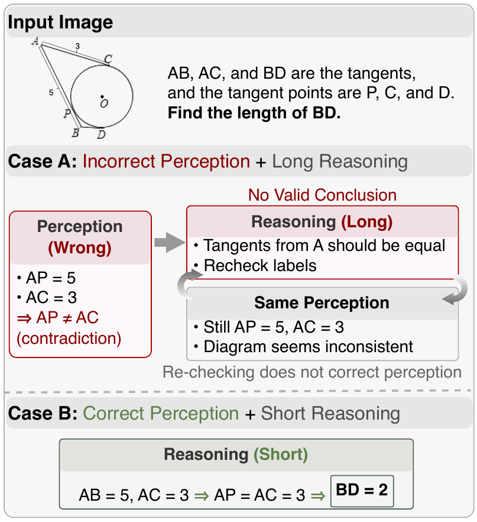
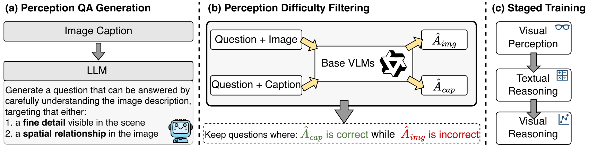
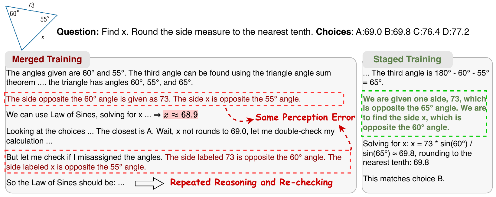
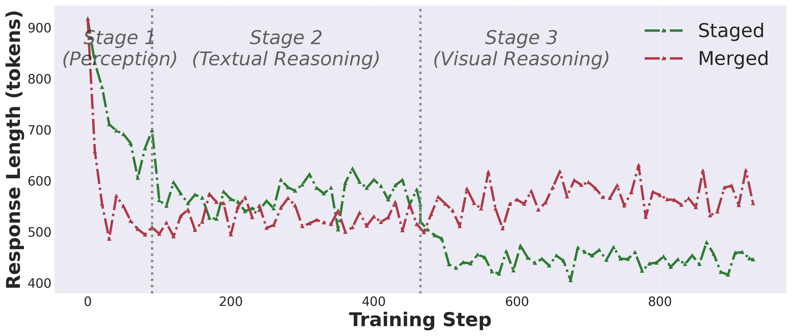

ICML 2026
Decoupling Perception and Reasoning Improves
Post-Training of Vision-Language Models
See first, then think. Visual perception — not reasoning length — is the dominant bottleneck for VLMs. We post-train along a new capability axis, orthogonal to the classic difficulty curriculum.
Juncheng Wu1,2, Hardy Chen2, Haoqin Tu2, Xianfeng Tang, Freda Shi3,4, Hui Liu, Hanqing Lu1, Cihang Xie2, Yuyin Zhou2
1Amazon · 2UC Santa Cruz · 3University of Waterloo · 4Vector Institute · Corresp. jwu418@ucsc.edu
Recent advances in VLMs emphasize long chain-of-thought reasoning; yet we find that performance on visual tasks is primarily limited by a lack of visual perception, not reasoning. We systematically decompose VLM post-training into three capability stages — visual perception, textual reasoning, visual reasoning — and show three things that change how to post-train a VLM:
Across four backbones the staged recipe lifts accuracy while producing 20.8% shorter reasoning traces — better seeing means less thinking.

What changed our minds about VLM post-training.
Reasoning data alone introduces a "perceptual tax" — adding dedicated perception samples lifts RealWorldQA by +3.7% and stabilises MMStar.
Beyond difficulty, training data can be ordered by the capability it targets. The two axes are orthogonal and additive: combining them lifts Qwen3-VL-8B from 58.56 → 62.99.
Perception → textual reasoning → visual reasoning is the right order. Flipping it to visual reasoning → textual reasoning → perception drops the visual-math average by 4.6 pts on Qwen2.5-VL-7B — perception is the scaffold that has to come first.
Three stages, one unified prompt, GRPO end-to-end.

Same data budget, same total steps. The only thing that changes is the schedule.
All three capability datasets (perception ∪ textual reasoning ∪ visual reasoning) are pooled and shuffled, then trained jointly with GRPO for the same total number of steps as the staged recipe.
The same data, run sequentially as perception → textual reasoning → visual reasoning, with each stage trained for the same number of epochs.
Click a backbone to switch the table.
| Setting | Visual Math AVG | Perception AVG | Overall AVG |
|---|
Visual math = MathVista / MathVision / MathVerse(VI) / WeMath. Perception = A-OKVQA / RealWorldQA / MMStar / POPE. Best per column in bold.
Capability axis × Difficulty axis — orthogonal, additive.
Curriculum learning has historically meant ordering training samples by difficulty. Our staged recipe surfaces a second, orthogonal axis: what capability each batch trains.
Empirically the two axes stack additively — combining them lifts Qwen3-VL-8B from 58.56 to 62.99, beating either axis alone by > 2 pts. This reframes post-training as choosing a trajectory through a 2D space rather than along a single difficulty line.
Launch scripts → training/examples/curriculum/Same problem, two trajectories. Staged sees correctly the first time and stops; merged loops on a wrong perception.


Everything needed to reproduce the paper.
@inproceedings{vlmcapcurriculum2026,
title = {From Seeing to Thinking: Decoupling Perception and Reasoning Improves Post-Training of Vision-Language Models},
author = {Wu, Juncheng and Chen, Hardy and Tu, Haoqin and Tang, Xianfeng and Shi, Freda and Liu, Hui and Lu, Hanqing and Xie, Cihang and Zhou, Yuyin},
booktitle = {Proceedings of the International Conference on Machine Learning (ICML)},
year = {2026},
eprint = {2605.20177},
archivePrefix = {arXiv},
primaryClass = {cs.CV},
url = {https://arxiv.org/abs/2605.20177}
}Paper available on arXiv.